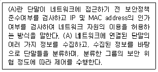
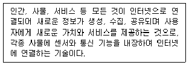
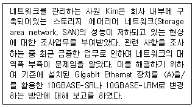
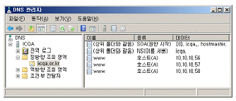
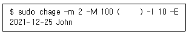
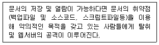
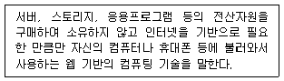
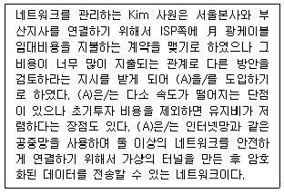

네트워크관리사-2급 (2021-11-14 기출문제)
1과목: TCP/IP
1. UDP 헤더에 포함이 되지 않는 항목은?
- 확인 응답 번호(Acknowledgment Number)
- 소스 포트(Source Port) 주소
- 체크섬(Checksum) 필드
- 목적지 포트(Destination Port) 주소
(정답률: 84%)

2. ARP 캐시에 대한 설명으로 옳지 않은 것은?
- 각 호스트는 ARP Request를 보내기 전에 ARP 캐시에서 해당 호스트의 하드웨어 주소를 찾는다.
- ARP 캐시는 새로운 하드웨어가 네트워크에 추가된 경우 갱신된다.
- ARP 캐시의 수명이 유한하여 무한정 커지는 것을 방지한다.
- 중복된 IP가 발견된 경우 ARP 캐시는 갱신되지 않는다.
(정답률: 79%)
3. OSI 7 Layer에 따라 프로토콜을 분류하였을 때, 다음 보기들 중 같은 계층에서 동작하지 않는 것은?
- SMTP
- RARP
- ICMP
- IGMP
(정답률: 77%)
4. TCP/IP 프로토콜 중에서 IP 계층의 한 부분으로 에러 메시지와 같은 상태 정보를 알려주는 프로토콜은?
- ICMP(Internet Control Message Protocol)
- ARP(Address Resolution Protocol)
- RARP(Reverse Address Resolution Protocol)
- UDP(User Datagram Protocol)
(정답률: 89%)
5. IGMP 프로토콜의 주된 기능은?
- 네트워크 내에 발생된 오류에 관한 보고 기능
- 대용량 파일을 전송하는 기능
- 멀티 캐스트 그룹에 가입한 네트워크 내의 호스트 관리 기능
- 호스트의 IP Address에 해당하는 호스트의 물리주소를 알려주는 기능
(정답률: 83%)
6. 원격 컴퓨터에 안전하게 액세스하기 위한 유닉스 기반의 명령 인터페이스 및 프로토콜로, 기본적으로 22번 포트를 사용하고, 클라이언트/서버 연결의 양단은 전자 서명을 사용하여 인증되며, 패스워드는 암호화하여 보호되는 것은?
- SSH
- IPSec
- SSL
- PGP
(정답률: 86%)
7. 서버 내 서비스들은 서로가 다른 문을 통하여 데이터를 주고받는데 이를 포트라고 한다. 서비스에 따른 기본 포트 번호로 옳지 않은 것은?
- FTP – 21
- Telnet - 23
- SMTP – 25
- WWW - 81
(정답률: 88%)
8. TCP/IP 프로토콜 4 Layer 구조를 하위 계층부터 상위 계층으로 올바르게 나열한 것은?
- Network Interface - Internet - Transport - Application
- Application - Network Interface - Internet - Transport
- Transport - Application - Network Interface - Internet
- Internet - Transport - Application - Network Interface
(정답률: 84%)
9. B Class 네트워크에서 6개의 서브넷이 필요할 때, 가장 많은 호스트를 사용할 수 있는 서브넷 마스크 값은?
- 255.255.192.0
- 255.255.224.0
- 255.255.240.0
- 255.255.248.0
(정답률: 70%)
10. IP Address를 관리하기 위한 Subnetting을 하는 이유로 옳지 않은 것은?
- IP Address를 효율적으로 사용할 수 있다.
- Network ID와 Host ID를 구분할 수 있다.
- 불필요한 Broadcasting Message를 제한할 수 있다.
- Host ID를 사용하지 않아도 된다.
(정답률: 83%)
11. 패킷 전송의 최적 경로를 위해 다른 라우터들로부터 정보를 수집하는데, 최대 홉이 15를 넘지 못하는 프로토콜은?
- RIP
- OSPF
- IGP
- EGP
(정답률: 84%)
12. TCP 3-Way Handshaking 연결수립 절차의 1,2,3단계 중 3단계에서 사용되는 TCP 제어 Flag는 무엇인가?
- SYN
- RST
- SYN, ACK
- ACK
(정답률: 75%)
13. 각 패킷마다 고유하게 부여하는 일련번호로서, 패킷이 너무 길어 분할하여 전송시 수신측에서 분할된 패킷을 원래대로 재조립할 때 이 필드가 동일한 패킷들을 조립한다. 이 필드는 무엇인가?
- TOS(Type of Service)
- Identification
- TTL(Time To Live)
- Protocol
(정답률: 73%)
14. 네트워크주소가 ′192.168.100.128′이며, 서브넷마스크가 ′255.255.255.192′인 네트워크가 있다. 이 네트워크에서 사용가능한 마지막 IP주소는 무엇인가?
- 192.168.100.129
- 192.168.100.190
- 192.168.100.191
- 192.168.100.255
(정답률: 68%)
15. 이더넷 프레임(Ethernet Frame)의 EtherType 필드는 데이터부분에 캡슐화된 데이터가 어느 프로토콜에 해당하는지를 나타내는 필드이다. IPv4 데이터가 캡슐화되었을 때에 표시되는 16진수 값은 무엇인가?
- 0x0800
- 0x0806
- 0x8100
- 0x86dd
(정답률: 68%)
16. 다음 중 사설 IP주소로 옳지 않은 것은?
- 10.100.12.5
- 128.52.10.6
- 172.25.30.5
- 192.168.200.128
(정답률: 72%)
17. HTTP 상태코드에 대한 설명으로 올바른 것은?
- 100번대 : 성공, 메소드 지시대로 요청을 성공적으로 수행
- 200번대 : 정보 제공, 요청 계속 또는 사용 프로토콜 변경 지시
- 300번대 : 리다이렉션, 요청 수행완료를 위해서 추가적인 작업 필요
- 400번대 : 서버에러, 클라이언트 요청은 유효하나 서버 자체의 문제 발생
(정답률: 69%)
2과목: 네트워크 일반
18. 데이터 흐름 제어(Flow Control)와 관련 없는 것은?
- Stop and Wait
- XON/XOFF
- Loop/Echo
- Sliding Window
(정답률: 74%)
19. IEEE 표준안 중 CSMA/CA에 해당하는 표준은?
- 802.1
- 802.2
- 802.3
- 802.11
(정답률: 77%)
20. 전송매체를 통한 데이터 전송 시 거리가 멀어질수록 신호의 세기가 약해지는 현상은?
- 감쇠 현상
- 상호변조 잡음
- 지연 왜곡
- 누화 잡음
(정답률: 90%)
21. OSI 7 Layer 중 데이터 링크 계층의 기능으로 옳지 않은 것은?
- 통신 프로토콜을 정의한 OSI 7 Layer 중 세 번째 계층에 해당한다.
- 비트를 프레임화 시킨다.
- 전송, 형식 및 운용에서의 에러를 검색한다.
- 흐름제어를 통하여 데이터 링크 개체간의 트래픽을 제어한다.
(정답률: 78%)
22. 다음 (A) 안에 들어가는 용어 중 옳은 것은?

- NIC
- F/W
- IPS
- NAC
(정답률: 69%)
23. 한번 설정된 경로는 전용 경로로써 데이터가 전송되는 동안 유지 해야 하는 전송 방식은?
- Circuit Switching
- Packet Switching
- Message Switching
- PCB Switching
(정답률: 72%)
24. 소프트웨어 정의 네트워크(SDN:Software Defined Networking)에 대한 설명으로 옳지 않은 것은?
- 정체를 일으키는 복잡한 구조 기술
- 가상화 기술의 발달에 대응하기 위한 기술
- 트래픽 패턴의 변화에 따른 대응 기술
- 네트워크 관리의 문제를 해결하기 위한 기술
(정답률: 78%)
25. 다음 지문에서 설명하는 것은?

- IoT
- NFC
- Cloud
- RFID
(정답률: 85%)
26. 다음 중 무선LAN보안을 위해 가장 좋은 방법은?
- WEP(Wired Equivalent Privacy)
- WPA(Wi-Fi Protected Access)
- WPA2(IEEE802.11i)
- MAC주소필터링
(정답률: 70%)
27. 다음은 네트워크 구축에 필요한 매체에 관한 내용이다. (A) 안에 들어가는 용어 중 옳은 것은?

- U/UTP CAT.3
- Thin Coaxial Cable
- U/FTP CAT.5
- Optical Fiber Cable
(정답률: 79%)
3과목: NOS
28. Windows Server 2016에 설치된 DNS에서 지원하는 레코드 형식 중 실제 도메인 이름과 연결되는 가상 도메인 이름의 레코드 형식은?
- CNAME
- MX
- A
- PTR
(정답률: 81%)
29. Windows Server 2016에서 FTP 사이트 구성시 SSL을 적용함으로써 얻어지는 것은?
- 전송속도 증대
- 사용자 편의 향상
- 동시 접속 사용자 수 증가
- 보안 강화
(정답률: 84%)
30. Windows Server 2016의 Hyper-V에 관한 설명으로 옳지 않은 것은?
- 하드웨어 데이터 실행 방지(DEP)가 필요하다.
- 서버관리자의 역할 추가를 통하여 Hyper-V 서비스를 제공 할 수 있다.
- 스냅숏을 통하여 특정 시점을 기록 할 수 있다.
- 하나의 서버에는 하나의 가상 컴퓨터만 사용할 수 있다.
(정답률: 85%)
31. 다음 그림은 Windows Server 2016의 DNS 관리자의 모습이다. 현재 www라는 동일한 이름으로 3개의 레코드가 등록되어 클라이언트가 도메인을 제공하면 IP주소를 번갈아가며 제공한다. 이처럼 IP 요청을 분산하여 서버 부하를 줄이는 방식을 무엇이라고 하는가?

- 라운드 로빈(Round Robin) 방식
- 큐(Queue) 방식
- 스택(Stack) 방식
- FIFO(First In First Out) 방식
(정답률: 84%)
32. Windows Server 2016의 시스템관리를 위해서 설계된 명령 라인 셀 및 스크립팅 언어로, 강력한 확장성을 바탕으로 서버 상의 수많은 기능의 손쉬운 자동화를 지원하는 것은?
- PowerShell
- C-Shell
- K-Shell
- Bourne-Shell
(정답률: 84%)
33. Linux에서 DNS의 SOA(Start Of Authority) 레코드에 대한 설명으로 옳지 않은 것은?
- Zone 파일은 항상 SOA로 시작한다.
- 해당 Zone에 대한 네임서버를 유지하기 위한 기본적인 자료가 저장된다.
- Refresh는 주 서버와 보조 서버의 동기 주기를 설정한다.
- TTL 값이 길면 DNS의 부하가 늘어난다.
(정답률: 74%)
34. Linux에서 ′manager′라는 파일을 파일의 소유자가 아닌 사람도 볼 수는 있지만 수정을 못하도록 하는 명령어는?
- chmod 777 manager
- chmod 666 manager
- chmod 646 manager
- chmod 644 manager
(정답률: 75%)
35. Linux에서 '/home' 디렉터리 밑에 'icqa'라는 하위 디렉터리를 생성하고자 할 때 올바른 명령은?
- ls /home/icqa
- cd /home/icqa
- rmdir /home/icqa
- mkdir /home/icqa
(정답률: 84%)
36. 다음 중 사용한 디스크 용량에 대한 정보를 제공하는 Linux 명령어는?
- du
- pwd
- cat
- vi
(정답률: 80%)
37. 네트워크를 관리하는 Kim 사원은 네트워크 연결을 구축하거나 문제를 해결할 때 패킷이 출발지에서 목적지까지 가는 경로를 살펴볼 수 있도록 네트워크 명령어를 사용하고자 한다. 이 명령은 ′tracert′에서 수행하는 동일한 정보를 보여주면서 홉과 다른 세부 정보사이의 시간에 관한 정보를 출력이 끝날때까지 저장한다. Kim 사원이 사용할 명령어는 무엇인가?
- ping
- nslookup
- pathping
- nbtstat
(정답률: 66%)
38. Windows Server 2016의 이벤트 뷰어에서 보안 로그 필터링시 사용할 수 있는 이벤트 수준으로 옳지 않은 것은?
- 중요
- 경고
- 오류
- 정보
(정답률: 60%)
39. Linux 명령어 중에 init(초기화 프로세스)를 이용하여 재부팅하는 옵션은 무엇인가?
- init 0
- init 1
- init 5
- init 6
(정답률: 75%)
40. Linux 시스템 담당자 Park 사원은 Linux 시스템 운영관리를 위해 시스템이 부팅할 때 생성된 로그를 살펴보고자 한다. 해당 로그파일은?
- /var/log/boot.log
- /var/log/lastlog
- /var/log/dmesg
- /var/log/btmp
(정답률: 56%)
41. 시스템 담당자 Alex는 하드디스크의 정보 유출을 우려하여, 하드디스크가 도난당해도 암호화키가 없이는 데이터를 읽지 못하도록 하드디스크 자체를 암호화하는 기술을 적용하려고 한다. 해당 기술은?
- BitLocker
- EFS(Encrypting File System)
- AD(Active Directory)
- FileVault
(정답률: 73%)
42. Linux 시스템 관리자는 John사원의 계정인 John의 패스워드 정책을 변경하기 위해 아래 지문과 같이 입력하였다. 10일전 암호변경 경고를 위한 명령으로 ( )안에 알맞은 옵션은?

- -m 10
- - L 10
- - i 10
- - W 10
(정답률: 70%)
43. 웹서버 관리자는 아래 지문에서 이야기한 공격에 대응하기 위해 인터넷 정보 서비스 관리자에 설정하지 않아야 하는 것은?

- HTTP 응답 헤더
- 디렉터리 검색
- SSL 설정
- 인증
(정답률: 69%)
44. 서버 담당자 Park 사원은 Windows Server 2016의 배포 서비스를 통하여 전원만 넣으면 Windows가 설치될 수 있도록 구성하고자 한다. 배포서비스는 회사내의 일관되고 표준화된 Windows 설치를 사용하여 아주 유용하게 사용할 수 있다. 다음 중 Windows Server 2016 배포 서비스의 장점으로 올바르지 않은 것은?
- 효율적인 자동 설치를 통한 비용 감소 및 시간 절약할 수 있다.
- 네트워크 기반으로 하는 운영체제 설치할 수 있다.
- 여러 대의 컴퓨터에 분산된 공유 폴더를 하나로 묶어서 사용할 수 있다.
- Windows 이미지를 클라이언트 컴퓨터에 배포할 수 있다.
(정답률: 68%)
45. 아파치(Apache) 웹서버를 운영 시 서비스에 필요한 여러 기능을 설정할 수 있는 파일은?
- httpd.conf
- access.conf
- srm.conf
- htdos.conf
(정답률: 80%)
4과목: 네트워크 운용기기
46. IP Address의 부족과 내부 네트워크 주소의 보안을 위해 사용하는 방법 중 하나로, 내부에서는 사설 IP Address를 사용하고 외부 네트워크로 나가는 주소는 공인 IP Address를 사용하도록 하는 IP Address 변환 방식은?
- DHCP 방식
- IPv6 방식
- NAT 방식
- MAC Address 방식
(정답률: 75%)
47. 다음은 무엇에 대한 설명인가?

- 클라이언트-서버 컴퓨팅
- 클라우드 컴퓨팅
- 웨어러블 컴퓨팅
- 임베디드 컴퓨팅
(정답률: 83%)
48. (A)에 들어가는 용어는 무엇인가?

- Public Network
- PAT
- VLAN
- VPN
(정답률: 76%)
49. OSI 계층의 물리 계층에서 여러 대의 PC를 서로 연결할 때 전기적인 신호를 재생하여 신호 분배의 기능을 담당하는 네트워크 연결 장비는?
- Bridge
- Hub
- L2 Switch
- Router
(정답률: 77%)
50. RAID의 레벨 중에서 회전 패리티 방식으로 병목현상을 줄이는 것은?
- RAID-2
- RAID-3
- RAID-4
- RAID-5
(정답률: 67%)